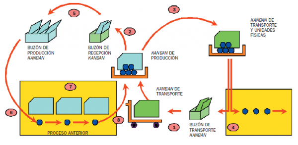

Para los diferentes proyectos de desarrollo existen diferentes metodologías de que son los marcos y normas para obtener resultados acertados y establecen:
• Definir actividades a llevarse a cabo en un Proyecto.
• Unificar criterios en la organización para el desarrollo del proyecto.
• Proporcionar puntos de control y revisión.
• Asegurar la uniformidad y calidad tanto del desarrollo como del sistema en sí.
• Satisfacer las necesidades de los usuarios del sistema.
• Conseguir un mayor nivel de rendimiento y eficiencia del personal
• Ajustarse a los plazos y costos previstos en la planificación.
• Generar de forma adecuada la documentación asociada a los sistemas.
• Facilitar el mantenimiento posterior de los sistemas.
Metodologías agiles: son aquellas que permiten adaptar la forma de trabajo a las condiciones del proyecto, consiguiendo flexibilidad e inmediatez en la respuesta para amoldar el proyecto y su desarrollo a las circunstancias específicas del entorno.
• Son muy conocidas el scrum y el modelo kanban
Fuente:http://fernandoescolar.github.io/public/uploads/2013/01/scrum-proceso.png
Fuente:https://metodoss.com/wp-content/uploads/m%C3%A9todo-kanban-e1473760829404.png

Fuente:http://3.bp.blogspot.com/-VCq5TNHp5HY/UWzPqIr2JYI/AAAAAAAAAAU/LJ7QSJnMOCk/s1600/modelo-en-cascada.png

Fuente:http://2.bp.blogspot.com/_24IGiuy4Xr8/SnRj_3KcBEI/AAAAAAAAAAU/0AYj12UidwI/s400/Modelo_Gral_Evolutivo_Incremental.jpgh